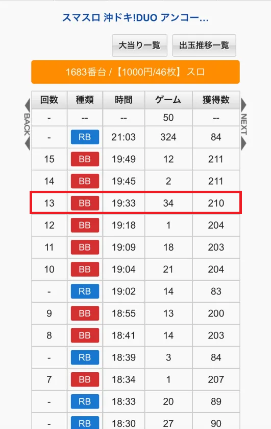
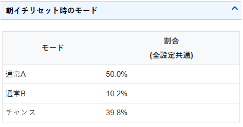
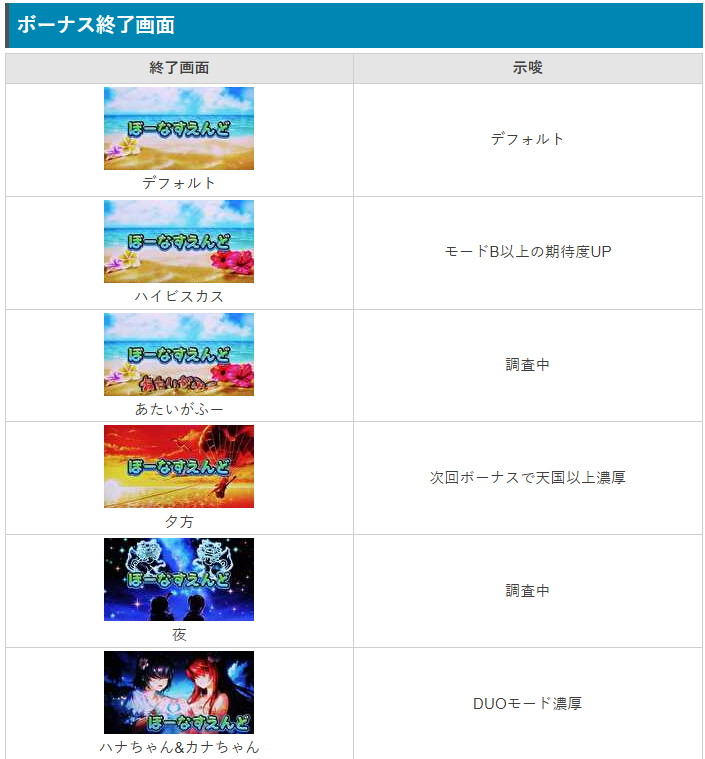
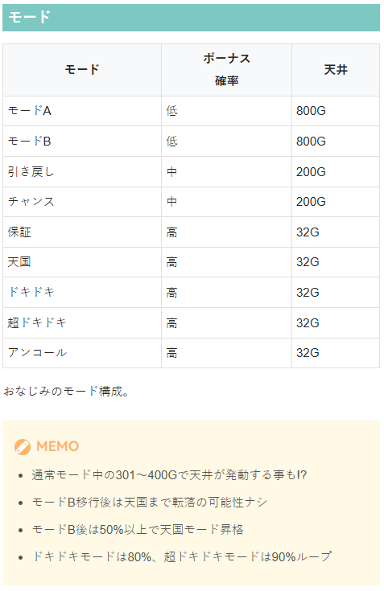
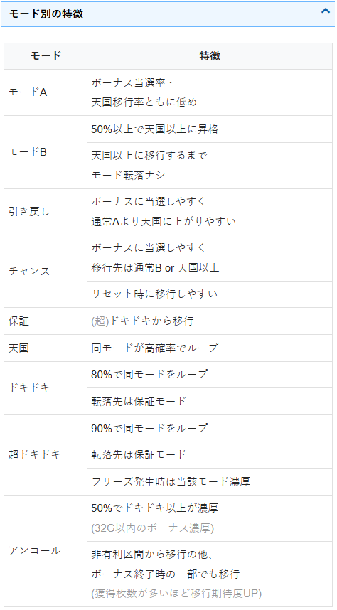
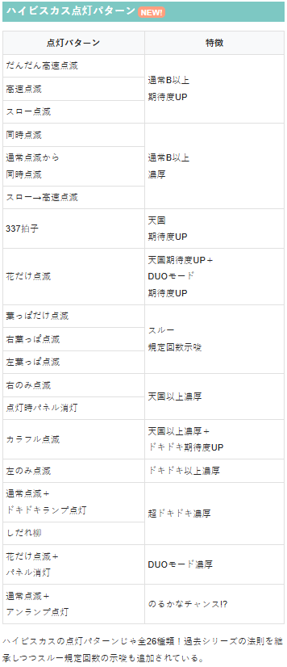
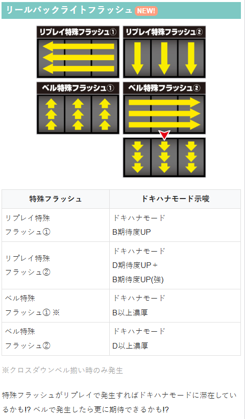

沖ドキ!DUO アンコール


狙い目
300-390Gに強いゾーン（仮天井）がある。
リセット、天国後問わず2.4スルーが強い傾向。
リセット狙い
スルー別リセット天井狙い
| スルー回数 | 狙い目 |
|---|---|
| 0スルー | 230G～ |
| 1スルー（0スルー150G以内当選時） | 32G～ |
| 1スルー（0スルー151G以上当選時） | 180G～ |
| 2スルー | 32G～ |
| 3スルー | 32G～ |
| 4スルー | 32G～ |
| 5スルー | 積極派32G～ 慎重派150G～ |
| 6スルー以降 | 32G～ |
スルー別リセットゾーン狙い
| スルー回数 | 狙い目 |
|---|---|
| 0スルー | 100G～150G |
| 1スルー（0スルー150G以内、200G当選時） | 32G～ |
| 1スルー（0スルー151G以上当選時） | 180G～ |
| 3スルー | 32G～ |
| 5スルー | ドキハナ失敗後、モードB以上、ドキハナB以上は32〜天国まで 慎重派は150G～ |
| 6スルー以降 | 32G～ |
※リセット3スルーのボーナス間狙い32Gからは期待値マイナスだが4スルーが強いため、2スルー以降は4スルーまで打った方が良さそう
※2.4スルーが強いため1.3スルーのボーダーが下がる
※300-390Gゾーンは380Gまでが良さそう？
※当選分布は300-380Gくらいに偏っている
①ゲーム数天井狙い（積極派、等価、再プレイ無制限向け）
| スルー回数 | 狙い目 |
|---|---|
| 0スルー | 260G～ |
| 1スルー | 220G～ |
| 2スルー | 100G～ |
| 3スルー | 170G～ |
| 4スルー | 70G～ |
| 5スルー | 32G～天国まで |
| 6スルー以降 | 32G～天国まで |
※仮天抜け後もそのまま打てるためゾーン狙い削除
②ゲーム数天井狙い（慎重派、非等価向け）
| スルー回数 | 狙い目 |
|---|---|
| 0スルー | 420G～ |
| 1スルー | 240G～ |
| 2スルー | 130G～ |
| 3スルー | 180G～ |
| 4スルー | 100G～ |
| 5スルー | 150G～天国まで |
| 6スルー以降 | 0G～天国まで |
スルー別ゾーン狙い
| スルー回数 | 狙い目 |
|---|---|
| 0スルー | 270G～ |
| 1スルー | 240G～ |
| 2スルー | 130G～ |
| 3スルー | 180G～ |
| 4スルー | 100G～ |
| 5スルー | 150G～天国当選まで |
※300-390Gゾーンは380Gまでが良さそう？
※当選分布は現状300-380Gくらいに偏っている※現状2連後（1G連含む）は、天国へ移行したとみなした方が無難
2連後を挟む狙い目について
ドキハナチャンス狙い
| 条件 | 狙い目 |
|---|---|
| ドキハナチャンス失敗後、ベル特殊フラッシュ②出現 | 32G～ボーナス当選まで |
| 一撃3000枚以上かつ途中ドキハナ成功履歴無し（差枚不問） | 32G～ボーナス当選まで |
| 有利区間切断後絡む天国かつ途中ドキハナ成功履歴から一撃1500枚以上後 | 32G～ボーナス当選まで |
※一撃3000枚以上後（途中ドキハナ成功履歴無し）を有利切断後とする。一撃2500枚以上でも高確率で有利切断していると思われるが、ドキハナ失敗を目視していないと狙えない。
※明らかに途中まで有利区間切断しておらず、かつ直近の天国で差枚が+1600枚を超えていると高確率で有利区間切断？差枚+2000枚を超えると確実に切断？
※ドキハナチャンス失敗後は約50％で次回ドキハナチャンスが発生する。上記の狙い目は約50％で来るドキハナチャンスを狙う条件。仮に条件を満たしていてもドキハナチャンスが出てきていないのを目視していたら狙えない。
※この機種だけ発生するケースとして、ボーナス終了後すぐレバーオンすると店内データ機の回転数がカウントされないケースがある（例：1G連なのにデータ機上0Gと表示）。そのためドキハナ成功時に32Gや33Gの当選履歴が出てきている可能性がごく稀にある。
ゾーン狙い
300-380Gでの当選率が高い。スルー別で狙い目が変わる。下記狙い目は目安。
| ゾーン | 狙い目 |
|---|---|
| 300-380Gゾーン | 220G～380Gまで |
攻めた狙い目
| 条件 | 狙い目 |
|---|---|
| 前回3連以上の天国後0スルーから2連後 | 100G～ボーナス当選まで |
※天国2連後かつ前回400G以上で当選はサンプルが増えて弱くなりました（1/2時点）
※天国後0スルーからの2連は自力の可能性が高いため、内部的に2スルーの可能性が高くなり機械割が高くなる？
示唆関連の押し引きについて
| 条件 | 狙い目 |
|---|---|
| ドキハナチャンス失敗後の台（次回ボーナス後も50％でドキハナチャンス） | ボーナス当選まで |
有利区間関連狙い
不明
やめ時
ボーナス終了後、32G消化して連チャンとドキハナチャンスがないことを確認してヤメ
その他
ドキハナ成功時の履歴
ドキハナ成功時は下記赤枠の様に34Gでの当選履歴が出てくる。33G、35Gの当選履歴は不明。
切断後の天井狙い時は連荘の中に34G当選履歴の有無を要確認。

朝イチリセット時のモード

ボーナス終了画面
あたいがふー モードB以上濃厚？
夜 天国中ドキドキ以上濃厚？非天国の場合は次回天国濃厚？

モード、モード別の特徴


ハイビスカス点灯パターン
ハイビスカス点灯パターン（Youtube） 発信元Pachibee

リールバックライトフラッシュ

参考元
基本情報
- メーカー: メーシー
- 機械割: 97.2% 〜 110.0%
- 導入開始日: 2025年12月22日（月）
- ゲーム性概要: ●沖ドキシリーズ初のスマスロで登場 ●初当り確率はシリーズ最高の1/240.1（設定1） ●スルー回数天井到達で次回天国以上!? ●ボーナス中はBIGの1G連抽選あり ●のるカナチャンスは1G連ストックの高確率状態 ●ドキハナチャンス成功で天国以上へ突入 ●ドキハナチャンス自体がループするドキハナモードも搭載


打ち方
打ち方・小役
打ち方（小役狙い）
「最初に狙う絵柄」 左リールにBARを狙う。スイカがスベってきたら、中・右リールにもスイカを狙おう。
「スイカ停止時」 中リールはBAR目安、右リールはBARを遅め（下段〜枠下）に目押しをしよう。
「レア役の停止形」
「確定役の停止例」
ボーナス中の中押し手順
「ボーナス中の中押し手順」 ボーナス中の予告音発生時は変則押しも可能で、中リールにBARを狙えばレア役の1確目を出せるためアツくなれる。 予告音発生時以外は、通常時と同様に左1stでの消化を推奨だ。
「BAR上段停止時」 チェリー濃厚なので、左リールにチェリーを狙う。
「BAR中段停止時」 確定役or中段チェリー濃厚の激アツ出目。
「BAR下段停止時」 スイカを否定すれば確定役！
解析情報通常時
小役関連
小役確率
| 設定 | チェリー | スイカ | 確定役 |
|---|---|---|---|
| 1 | 1/46.8 | 1/143.7 | 1/4369.1 |
| 2 | 1/45.0 | 1/143.7 | 1/4369.1 |
| 3 | 1/43.3 | 1/143.7 | 1/4369.1 |
| 5 | 1/41.7 | 1/143.7 | 1/4369.1 |
| 6 | 1/40.3 | 1/143.7 | 1/4369.1 |
ボーナス当選時・遅れ発生率
| 契機 | 発生率 |
|---|---|
| レア役以外 | 20.0% |
| チェリー | 12.5% |
| スイカ | 12.5% |
| 確定役 | 25.0% |
| 中段チェリー | 37.5% |
※次ゲーム告知選択時のみ遅れが発生する可能性あり
ボーナス当選かつ、次ゲーム告知が選択された場合に遅れ（ショートロック）が発生する可能性あり。中段チェリーや確定役の可能性が高いのも特徴だ。
規定300Gモード
規定300Gモード解説
規定300Gモード
天国以上へ移行していないボーナス当選時に移行抽選
設定変更時は滞在の可能性大
滞在中に300Gに到達すると、以降は高確率でボーナスを抽選
規定300Gモード自体にループ性あり
通常モードとは別軸で抽選されるモードで、滞在中に300Gに到達すると、以降は高確率でボーナス抽選がおこなわれる。このモード自体にもループ性があるので、300G前後の台や300G台で当たった後は狙い目のひとつといえる。
ドキハナモード
ドキハナモードの種類と特徴
| モード | 特徴 |
|---|---|
| ドキハナモードA | ● 昇格時はドキハナモードBへ |
| ドキハナモードB | ● 昇格時は基本的にドキハナモードDへ ● まれにドキハナモードCへ昇格 |
| ドキハナモードC | ● 昇格時はドキハナモードFへ |
| ドキハナモードD | ● ドキハナチャンス発生濃厚 ● ドキハナモードEへの昇格あり |
| ドキハナモードE | ● ドキハナチャンス発生濃厚 ● 約50%でスーパードキハナチャンス ● ドキハナモードFへの昇格あり |
| ドキハナモードF | ● スーパードキハナチャンス発生濃厚 ● ドキハナモードCからの移行がメイン契機 |
| ドキハナモードG | ● アンコールモード時に必ず移行 ● ドキハナチャンス発生濃厚 ● 約20%でスーパードキハナチャンス |
ドキハナモードの移行契機
ボーナス間300G・500G・700G消化で昇格のチャンス
アンコールモード移行時はドキハナモードG濃厚
ドキハナモードはA〜Gの7種類。ボーナス間のハマリが一定に到達すると昇格のチャンスで、アンコールモード移行時は必ずドキハナモードGへ移行する。
「リールバックライトフラッシュでのドキハナモード示唆」
リールバックライトフラッシュ発生時の示唆
| フラッシュ | 示唆 |
|---|---|
| リプレイ特殊フラッシュA | ドキハナモードB示唆 |
| リプレイ特殊フラッシュB | ドキハナモードD示唆かつ、 ドキハナモードB示唆［強］ |
| ベル特殊フラッシュA （右下がりベル揃い時のみ発生） | ドキハナモードB以上濃厚 |
| ベル特殊フラッシュB | ドキハナモードD以上濃厚 |
リセット時・初期ドキハナモード振り分け
| モード | 振り分け |
|---|---|
| ドキハナモードA | 69.5% |
| ドキハナモードB | 29.7% |
| ドキハナモードC | 0.4% |
| ドキハナモードD | 0.4% |
初期モードはA〜Dから選択。以降は300・500・700G消化時に、滞在している通常モードとドキハナモードを参照して移行抽選がおこなわれる。
［通常A滞在時・300G消化時］ ドキハナモード移行率
| 移行先 | ドキハナ モードA滞在時 | ドキハナ モードB滞在時 | ドキハナ モードC滞在時 |
|---|---|---|---|
| ドキハナモードAへ | 84.8% | ー | ー |
| ドキハナモードBへ | 14.8% | 75.0% | ー |
| ドキハナモードCへ | ー | 1.6% | 75.0% |
| ドキハナモードDへ | 0.4% | 23.4% | ー |
| ドキハナモードEへ | ー | ー | ー |
| ドキハナモードFへ | ー | ー | 25.0% |
| 移行先 | ドキハナ モードD滞在時 | ドキハナ モードE滞在時 | ドキハナ モードF滞在時 |
| ドキハナモードAへ | ー | ー | ー |
| ドキハナモードBへ | ー | ー | ー |
| ドキハナモードCへ | ー | ー | ー |
| ドキハナモードDへ | 93.8% | ー | ー |
| ドキハナモードEへ | 6.3% | 93.8% | ー |
| ドキハナモードFへ | ー | 6.3% | 100% |
※モードGはアンコールモード後専用
［通常B滞在時・300G消化時］ ドキハナモード移行率
| 移行先 | ドキハナ モードA滞在時 | ドキハナ モードB滞在時 | ドキハナ モードC滞在時 |
|---|---|---|---|
| ドキハナモードAへ | 99.2% | ー | ー |
| ドキハナモードBへ | 0.4% | 99.6% | ー |
| ドキハナモードCへ | ー | ー | 99.6% |
| ドキハナモードDへ | 0.4% | 0.4% | ー |
| ドキハナモードEへ | ー | ー | ー |
| ドキハナモードFへ | ー | ー | 0.4% |
| 移行先 | ドキハナ モードD滞在時 | ドキハナ モードE滞在時 | ドキハナ モードF滞在時 |
| ドキハナモードAへ | ー | ー | ー |
| ドキハナモードBへ | ー | ー | ー |
| ドキハナモードCへ | ー | ー | ー |
| ドキハナモードDへ | 99.6% | ー | ー |
| ドキハナモードEへ | 0.4% | 99.6% | ー |
| ドキハナモードFへ | ー | 0.4% | 100% |
※モードGはアンコールモード後専用
［通常A滞在時・500G消化時］ ドキハナモード移行率
| 移行先 | ドキハナ モードA滞在時 | ドキハナ モードB滞在時 | ドキハナ モードC滞在時 |
|---|---|---|---|
| ドキハナモードAへ | 89.8% | ー | ー |
| ドキハナモードBへ | 9.8% | 79.7% | ー |
| ドキハナモードCへ | ー | 1.2% | 79.7% |
| ドキハナモードDへ | 0.4% | 19.1% | ー |
| ドキハナモードEへ | ー | ー | ー |
| ドキハナモードFへ | ー | ー | 20.3% |
| 移行先 | ドキハナ モードD滞在時 | ドキハナ モードE滞在時 | ドキハナ モードF滞在時 |
| ドキハナモードAへ | ー | ー | ー |
| ドキハナモードBへ | ー | ー | ー |
| ドキハナモードCへ | ー | ー | ー |
| ドキハナモードDへ | 94.9% | ー | ー |
| ドキハナモードEへ | 5.1% | 94.9% | ー |
| ドキハナモードFへ | ー | 5.1% | 100% |
※モードGはアンコールモード後専用
［通常B滞在時・500G消化時］ ドキハナモード移行率
※モードGはアンコールモード後専用
［通常Aor通常B滞在時・700G消化時］ ドキハナモード移行率
| 移行先 | 滞在モード | ||
|---|---|---|---|
| 移行先 | モードA | モードB | モードC |
| モードAへ | ー | ー | ー |
| モードBへ | 99.6% | ー | ー |
| モードCへ | ー | 6.3% | ー |
| モードDへ | 0.4% | 93.8% | ー |
| モードEへ | ー | ー | ー |
| モードFへ | ー | ー | 100% |
| 移行先 | 滞在モード | ||
| 移行先 | モードD | モードE | モードF |
| モードAへ | ー | ー | ー |
| モードBへ | ー | ー | ー |
| モードCへ | ー | ー | ー |
| モードDへ | 75.0% | ー | ー |
| モードEへ | 25.0% | 75.0% | ー |
| モードFへ | ー | 25.0% | 100% |
※モードGはアンコールモード後専用
通常モード
モードごとの天井
| モード | 天井 |
|---|---|
| 通常A | 800G |
| 通常B | 800G |
| 引き戻し | 200G |
| チャンス | 200G |
モードごとの特徴
| モード | ボーナス確率 | 特徴 |
|---|---|---|
| 通常A | 低 | ● ボーナス確率・天国移行率ともに低め |
| 通常B | 低 | ● 50%以上で天国に昇格 ● 天国までモードの転落なし |
| 引き戻し | 中 | ● 通常Aより天国へ昇格しやすい |
| チャンス | 中 | ● 設定変更時に移行しやすい ● ボーナス後は通常B or 天国以上 |
注目ポイント
通常A・Bでも301～400Gが天井になる可能性あり
通常Bから通常Aへの転落はナシ
通常B中のボーナス当選時は50%以上で天国以上へ昇格
通常時はシリーズおなじみのモードで管理されていて、ボーナスを契機にモード移行を抽選する。
連チャンモードはコチラ
［設定変更時］モード振り分け
| モード | 振り分け |
|---|---|
| 通常A | 50.0% |
| 通常B | 10.2% |
| チャンス | 39.8% |
設定変更時は1/2で通常B以上が選択される。
［通常A／通常B／引き戻し／チャンス］ ボーナス種別振り分け
| 契機 | BIG | REG |
|---|---|---|
| レア役以外 | 47.0% | 53.0% |
| 規定ゲーム数到達 | 50.0% | 50.0% |
| スイカ | 50.0% | 50.0% |
| チェリー | 100% | ー |
| 中段チェリー・確定役 | 100% | ー |
ボーナス抽選
［チェリー］ボーナス当選率
※天国以上…天国・（超）ドキドキ・保障・アンコール
［スイカ］ボーナス当選率
| 設定 | 通常A・通常B | 引き戻し | チャンス | 天国以上 |
|---|---|---|---|---|
| 1 | 2.3% | 4.6% | 4.6% | 13.0% |
| 2 | 2.3% | 4.6% | 4.6% | 13.0% |
| 3 | 2.3% | 4.6% | 4.6% | 13.0% |
| 5 | 2.3% | 4.6% | 4.6% | 13.0% |
| 6 | 2.3% | 4.6% | 4.6% | 13.0% |
※天国以上…天国・（超）ドキドキ・保障・アンコール
確定役・中段チェリーはボーナス濃厚。 通常モードに比べて連チャンモード中（天国以上）の当選率が高いため、32G以内にレア役でボーナスに当選すれば天国以上の期待度がアップする。
天井
ボーナススルー回数天井
ボーナススルー回数天井のポイント
3or5or9or10回目のボーナス当選で天国以上へ移行
3回目の選択率は約25%
設定変更時は5回目の選択率が約25%
5回目を選択時はドキドキ以上濃厚
9回目を選択時は約25%でドキドキへ
10回目はドキドキ以上濃厚かつ、約50%で超ドキドキへ
今作は規定回数のボーナス当選で必ず天国以上へ移行（ボーナススルー回数天井）。天井に到達すれば天国以上濃厚で、5回目選択時や最大の10回目到達時はドキドキモード以上濃厚となる。
ボーナス3回目は約25%で天国以上に移行するので狙い目。設定変更時は約25%でドキドキ以上濃厚になる5回目が選択される。
ボーナススルー回数天井振り分け
| ボーナス回数 | 設定変更時 | 設定変更時以外 |
|---|---|---|
| 3回目 | 24.6% | 24.6% |
| 5回目 | 24.6% | 5.0% |
| 9回目 | 44.5% | 64.1% |
| 10回目 | 6.3% | 6.3% |
※3回目なら2回スルー→3回目のボーナスで天国へ移行
フリーズ
ロングフリーズ動画
BIG＋超ドキドキモード移行濃厚。実戦上は中段チェリーを契機に発生していた。
解析情報ボーナス時
ボーナス
ボーナス性能
| 1Gあたりの純増 | 約4.0枚 |
|---|---|
| 平均獲得枚数 | BIG：204枚 REG：84枚 |
| 消化中の抽選 | BIGの1G連抽選 |
| 備考 | ボーナス開始時の一部で 「のるカナチャンス」突入の可能性あり |
押し順ベルの停止音変化が第3停止まで続けばBIG1G連濃厚。レア役での1G連抽選もある。
［ハナちゃん＆カナちゃんランプ点灯］
ハナちゃんランプ・カナちゃんランプ点灯時の恩恵
| ハナちゃんランプ（左） | BIG1G連＋天国orドキハナチャンス濃厚 |
|---|---|
| カナちゃんランプ（右） | BIG1G連濃厚 |
| 両方点灯 | BIG1G連＋DUOモード滞在濃厚 |
ハナちゃんorカナちゃんランプ点灯でBIGの1G連濃厚。両方が点灯した場合はDUOモード滞在も濃厚になる。
ボーナス別の入賞ライン
| ボーナス | 中段 | 右下がり | 右上がり |
|---|---|---|---|
| REG | 100% | ー | ー |
| BIG | 75.0% | 25.0% | ー |
| BIG＋DUOモード | 60.0% | 20.0% | 20.0% |
ボーナスが右上がりに揃えばBIG＋DUOモード濃厚。 ドキハナチャンス成功時とロングフリーズ時は必ず中段に揃う。
BIGの1G連抽選
ボーナス中は成立役に応じてBIGの1G連を抽選する。
1G連ストック当選率
| 役 | 当選率 |
|---|---|
| 押し順ナビ | ー |
| チェリー | 1.2% |
| スイカ | 5.1% |
| 確定役・中段チェリー | 100% |
BIG1G連の特徴
チェリー・スイカ契機の1G連は モード移行抽選ナシ
確定役・中段チェリー契機の1G連当選時は モード移行抽選アリ
非連チャンモード時の1G連はボーナススルー回数が加算されるので、 スルー回数天井到達時は天国以上へ移行
連チャンモード
連チャンモードの特徴
| モード | 天井 | 特徴 |
|---|---|---|
| 保障 | 32G | ● ドキドキ・超ドキドキ終了後に移行 |
| 天国 | 32G | ● 高確率で天国がループ |
| ドキドキ | 32G | ● ループ率80% |
| 超ドキドキ | 32G | ● ループ率90% |
| アンコール | 32G | ● 有利区間リセット時に移行 ● ボーナス終了時の一部でも移行（獲得枚数が多いほど移行期待度アップ） |
注目ポイント
連チャンモード中、ボーナス当選が遅い（32Gに近い）と アンコールモード滞在の可能性がアップ
アンコールモードは天国以上終了時に移行する可能性あり 次回のモードは50%以上でドキドキ以上
連チャンモード中は32G以内に必ずボーナスに当選。 アンコールモードは連チャンモード終了時にのみ移行する可能性があり、50%以上でドキドキモード以上へ移行する。
規定ゲーム数の短縮抽選
ボーナス開始時に天国以上（保障含む）に滞在していた場合、次のボーナスを即放出（1G連）する抽選をおこなう。 この短縮抽選による1G連の場合、連チャンモードの移行抽選は通常通りおこなわれ、DUOモードへ移行する可能性もある（レア役契機の1G連はモード移行抽選ナシ）。
滞在モード別・短縮抽選当選率
| モード | 当選率 |
|---|---|
| 天国 | 11.7% |
| ドキドキ | 14.1% |
| 超ドキドキ | 17.2% |
| 保障 | 6.3% |
連チャンモードごとのボーナス確率
| 設定 | 天国・（超）ドキドキ・保障 | アンコール |
|---|---|---|
| 1 | 1/12.5 | 1/19.1 |
| 2 | 1/12.5 | 1/19.1 |
| 3 | 1/12.5 | 1/19.1 |
| 5 | 1/12.5 | 1/19.1 |
| 6 | 1/12.5 | 1/19.1 |
［天国／（超）ドキドキ／保障］ボーナス種別振り分け
| 契機 | BIG | REG |
|---|---|---|
| レア役以外 | 70.0% | 30.0% |
| 規定ゲーム数到達 | 75.0% | 25.0% |
| スイカ | 50.0% | 50.0% |
| チェリー | 100% | ー |
| 中段チェリー・確定役 | 100% | ー |
［アンコール］ボーナス種別振り分け
| 契機 | BIG | REG |
|---|---|---|
| レア役以外 | 75.0% | 25.0% |
| 規定ゲーム数到達 | 75.0% | 25.0% |
| スイカ | 50.0% | 50.0% |
| チェリー | 100% | ー |
| 中段チェリー・確定役 | 100% | ー |
のるカナチャンス
のるカナチャンス性能
| 突入契機 | ボーナス開始時の一部、 天国以上ループ中のボーナス当選時の一部 |
|---|---|
| 継続ゲーム数 | 10G＋α（11G目から転落抽選） |
| 消化中の抽選 | BIGの1G連を高確率でストック （押し順ナビ発生でチャンス、レア役は大チャンス） |
| 備考① | レア役契機のボーナス当選時は突入率アップ |
| 備考② | 最大天井（800G）到達時は突入濃厚 |
| 備考③ | 上乗せ期待度の高い「裏のるカナチャンス」あり |
裏のるカナチャンス
REG契機の当選は裏のるカナチャンスの可能性あり
1G連当選率がのるカナチャンスより高い
裏のるカナチャンスはREG終了まで継続
本機から新搭載された10G＋α継続のBIG1G連の高確率。
ボーナス中に液晶左右のアンプランプが点灯すればのるカナチャンス突入!?
1G連ストック当選率
| 役 | のるカナチャンス | 裏のるカナチャンス |
|---|---|---|
| 押し順ナビ | 6.6% | 33.2% |
| チェリー | 40.6% | 78.1% |
| スイカ | 66.8% | 78.1% |
| 確定役・中段チェリー | 100% | 100% |
DUOモード
DUOモード性能
| 突入契機 | BIG1G連当選時の一部、 ドキハナチャンスでハナちゃん＆カナちゃんランプ点灯時 |
|---|---|
| 恩恵 | BIGの1G連がループ |
| ループ率 | 60%or80% |
| 備考 | スーパードキハナチャンス契機時は80%ループ濃厚 |
BIGの1G連がループするモードで、ハナちゃんランプ・カナちゃんランプの両方が点灯すればDUOモード滞在濃厚。 ループ率は60%と80%の2種類がある。
ドキハナチャンス
ドキハナチャンス概要
ボーナス後33G目に突入する可能性あり（32G目に突入告知発生）。1G限定のCZとなっていて、成功すればBIG＋天国以上へ移行する。 ドキハナチャンスがループすることもあり。上位ver.の超ドキハナチャンスなら成功濃厚かつ、カナちゃん＆ハナちゃんランプのダブル点灯（DUOモード）にも期待できる。
ドキハナチャンス性能
| 突入契機 | ボーナス後33G目の一部 |
|---|---|
| 継続ゲーム数 | 1G |
| 消化中の抽選 | 成立役に応じた成功抽選 （レア役は成功濃厚） 、 成功時はBIG＋天国以上濃厚 |
| 成功期待度 | 約50%（超は約60%） |
ドキハナチャンスの特徴
超ドキハナチャンスはBIG濃厚かつ、 DUOモード期待度もアップ
ハナちゃん＆カナちゃんランプダブル点灯でDUOモード濃厚、 超ドキハナチャンス中なら80%ループのDUOモード濃厚
成功時は天国以上濃厚かつ、約30%でドキドキ以上を選択
ハマリゲーム数が深かったり、獲得枚数が多いほど突入しやすい
ドキハナチャンス失敗後の次のボーナス終了後は、 約50%でドキハナチャンスに突入
ドキハナチャンスへの突入はドキハナモードで管理
［超ドキハナチャンス］
ボーナス当選率 ドキハナチャンス
| 役 | 成功 | 成功＋ランプダブル点灯 |
|---|---|---|
| レア役以外 | 45.0% | 5.0% |
| チェリー | 75.0% | 25.0% |
| スイカ | 50.0% | 50.0% |
| 確定役・中段チェリー | ー | 100% |
超ドキハナチャンス
| 役 | 成功 | 成功＋ランプダブル点灯 |
|---|---|---|
| レア役以外 | 40.0% | 60.0% |
| チェリー | ー | 100% |
| スイカ | ー | 100% |
| 確定役・中段チェリー | ー | 100% |
※ランプダブル点灯…ハナちゃん＆カナちゃんランプ点灯＝DUOモード
レア役は成功濃厚かつ、ハナちゃんランプ＆カナちゃんランプのダブル点灯の期待度アップ。 超ドキハナチャンスはレア役ならダブル点灯濃厚、レア役以外でも6割でダブル点灯となるため強力だ。
ドキハナチャンス発生率
| モード | ドキハナチャンス | スーパー ドキハナチャンス | トータル |
|---|---|---|---|
| ドキハナモードA | ー | ー | ー |
| ドキハナモードB | 0.4% | ー | 0.4% |
| ドキハナモードC | ー | 0.4% | 0.4% |
| ドキハナモードD | 99.6% | 0.4% | 100% |
| ドキハナモードE | 50.0% | 50.0% | 100% |
| ドキハナモードF | ー | 100% | 100% |
| ドキハナモードG | 80.5% | 19.5% | 100% |
ドキハナモードD以上滞在時はドキハナチャンス発生濃厚だ。
演出情報
通常時
通常時のモード示唆演出
「ハイビスカスの点灯パターン」 通常点滅以外はBIG濃厚。モードや天国までのボーナススルー回数などを示唆するパターンもある。
ハイビスカス点灯パターンの示唆
| パターン | 示唆 |
|---|---|
| だんだん高速点滅 | 通常Ｂ示唆 |
| 高速点滅 | 通常Ｂ示唆 |
| スロー点滅 | 通常Ｂ示唆 |
| 同時点滅 | 通常Ｂ以上濃厚 |
| 通常点滅→同時点滅 | 通常Ｂ以上濃厚 |
| スロー点滅→高速点滅 | 通常Ｂ以上濃厚 |
| 337拍子 | 天国示唆 |
| 花だけ点滅 | 天国＆DUOモード示唆 |
| 葉っぱだけ点滅 | ボーナススルー回数示唆 |
| 右葉っぱ点滅 | ボーナススルー回数示唆 |
| 左葉っぱ点滅 | ボーナススルー回数示唆 |
| 右のみ点滅 | 天国以上濃厚 |
| 点滅時下パネル消灯 | 天国以上濃厚 |
| カラフル点滅 | 天国以上＆ドキドキ示唆 |
| 花だけ点滅＋パネル消灯 | DUOモード濃厚 |
| 左のみ点滅 | ドキドキ以上濃厚 |
| 通常点滅＋ドキドキランプ点灯 | 超ドキドキ濃厚 |
| しだれ柳 | 超ドキドキ濃厚 |
| 通常点滅＋アンプランプ点灯 | のるカナチャンス突入 |
「ボーナスの揃うライン」 右上がりにボーナスが揃えばDUOモード濃厚！
ドキハナチャンス
ドキハナチャンス中の演出期待度・法則
| 演出 | 期待度など |
|---|---|
| MAX BET出現 | 成功濃厚 |
| デカMAX BET出現 | 成功濃厚かつ、 ハナちゃん＆カナちゃんランプ点灯濃厚 |
［MAX BET］
［レア役以外・押し順ナビなし時］ 告知演出発生割合 ドキハナチャンス（通常）
| 告知パターン | 失敗時 | 成功時 | 成功＋ ランプダブル点灯 |
|---|---|---|---|
| 第1停止ロック | ー | 3.1% | 3.1% |
| 第2停止ロック | ー | 3.1% | 3.1% |
| 第3停止時の演出 | 100% | 87.5% | 68.8% |
| MAXBET出現 | ー | 6.3% | 25.0% |
スーパードキハナチャンス
| 告知パターン | 失敗時 | 成功時 | 成功＋ ランプダブル点灯 |
|---|---|---|---|
| 第1停止ロック | ー | ー | 3.1% |
| 第2停止ロック | ー | ー | 3.1% |
| 第3停止時の演出 | ー | 100% | 68.8% |
| MAXBET出現 | ー | ー | 25.0% |
［レア役以外・押し順ナビあり時］ 告知演出発生割合 ドキハナチャンス（通常）
| 告知パターン | 失敗時 | 成功時 | 成功＋ ランプダブル点灯 |
|---|---|---|---|
| 第1停止ロック | ー | 12.5% | 12.5% |
| 第2停止ロック | ー | 12.5% | 12.5% |
| 第3停止時の演出 | 100% | 71.8% | 62.5% |
| MAXBET出現 | ー | 3.1% | 12.5% |
スーパードキハナチャンス
| 告知パターン | 失敗時 | 成功時 | 成功＋ ランプダブル点灯 |
|---|---|---|---|
| 第1停止ロック | ー | ー | 12.5% |
| 第2停止ロック | ー | ー | 12.5% |
| 第3停止時の演出 | ー | 100% | 62.5% |
| MAXBET出現 | ー | ー | 12.5% |
［チェリー・スイカ時］ 告知演出発生割合 ドキハナチャンス（通常）
| 告知パターン | 失敗時 | 成功時 | 成功＋ ランプダブル点灯 |
|---|---|---|---|
| 第1停止ロック | ー | ー | 3.1% |
| 第2停止ロック | ー | ー | 3.1% |
| 第3停止時の演出 | ー | 61.0% | 46.9% |
| MAXBET出現 | ー | 39.0% | 46.9% |
スーパードキハナチャンス
| 告知パターン | 失敗時 | 成功時 | 成功＋ ランプダブル点灯 |
|---|---|---|---|
| 第1停止ロック | ー | ー | 12.5% |
| 第2停止ロック | ー | ー | 12.5% |
| 第3停止時の演出 | ー | ー | 37.5% |
| MAXBET出現 | ー | ー | 37.5% |
［中段チェリー時］ 告知演出発生割合 ドキハナチャンス（通常）
| 告知パターン | 失敗時 | 成功時 | 成功＋ ランプダブル点灯 |
|---|---|---|---|
| 第1停止ロック | ー | ー | 75.0% |
| 第2停止ロック | ー | ー | ー |
| 第3停止時の演出 | ー | ー | 12.5% |
| MAXBET出現 | ー | ー | 12.5% |
スーパードキハナチャンス
| 告知パターン | 失敗時 | 成功時 | 成功＋ ランプダブル点灯 |
|---|---|---|---|
| 第1停止ロック | ー | ー | 50.0% |
| 第2停止ロック | ー | ー | ー |
| 第3停止時の演出 | ー | ー | 25.0% |
| MAXBET出現 | ー | ー | 25.0% |
ボーナス
楽曲の種類
| 楽曲 | CV |
|---|---|
| 私バージョンアップ！ | カナちゃん （竹達彩奈） |
| 愛情ナウアップデート | カナちゃん （竹達彩奈） |
| 夏空アンコール（新曲） | カナちゃん （竹達彩奈） |
| 確信！誘惑☆Summer | ハナちゃん （上坂すみれ） |
| 密な心のシンデレラ☆ディスタンス | ハナちゃん （上坂すみれ） |
| あざとい姫のLOL（新曲） | ハナちゃん （上坂すみれ） |
| LALA LUCKY GIRLS | カナちゃん＆ ハナちゃん |
| EVER LASTING LOVE～DUO ver.~ | カナちゃん＆ ハナちゃん |
| 私バージョンアップ！～Unplugged ver.～ （新曲） | カナちゃん＆ ハナちゃん |
楽曲変化条件・恩恵
| 楽曲 | 条件・恩恵 |
|---|---|
| 私バージョンアップ！ | ● 1G連獲得時の一部 ● 設定2以上の可能性大 かつ、高設定ほど変化しやすい |
| 愛情ナウアップデート | ● 1G連獲得＋ボーナス1回以上濃厚時 |
| 夏空アンコール | ● 1G連獲得時のデフォルト |
| 確信！誘惑☆Summer | ● 1G連獲得＋天国以上濃厚 |
| 密な心の シンデレラ☆ディスタンス | ● ドキハナチャンス成功時（BIG＋天国以上濃厚） |
| あざとい姫のLOL | ● 1G連獲得＋ドキハナチャンス濃厚 |
| LALA LUCKY GIRLS | ● 超ドキハナチャンス成功＋DUOモード濃厚 ● 1G連獲得＋DUOモード濃厚 |
| EVER LASTING LOVE ～DUO ver.~ | ● 1G連獲得＋ドキドキモード以上濃厚 ● ロングフリーズ後（超ドキドキモード濃厚） |
| 私バージョンアップ！ ～Unplugged ver.～ | ● 超ドキハナチャンス成功かつ80%ループのDUOモード濃厚 ● 1G連獲得＋80%ループのDUOモード濃厚 |
歌付きの楽曲が流れれば何かしらの恩恵獲得濃厚。 BIG1G連獲得時のデフォルトは「夏空アンコール」だが、「確信！誘惑☆Summer」なら天国以上濃厚、「私バージョンアップ！ 〜Unplugged ver.〜」なら80%ループのDUOモード濃厚のように、流れる楽曲によって示唆内容が異なる。
※DUOモード突入時はハナちゃん＆カナちゃんランプがダブルで点灯
ボーナス終了画面の示唆
| 画面 | 示唆 |
|---|---|
| 砂浜 | デフォルト |
| ハイビスカス | 通常B以上に期待 |
| あたいがふー | 通常B以上濃厚 |
| 夕方 | 天国以上or次回ボーナスで天国以上へ移行 |
| シーサー | ドキドキ以上or次回ボーナスでドキドキ以上 |
| ハナちゃん＆カナちゃん | DUOモード濃厚 |
［砂浜］
［ハイビスカス］
［あたいがふー］
［夕方］
［シーサー］
［ハナちゃん＆カナちゃん］
ボーナステンパイ音の示唆
| テンパイ音 | 示唆 |
|---|---|
| 通常テンパイ音 | 示唆ナシ |
| 「ラッキー」 | ドキドキ以上 |
| 「超ラッキー」 | 超ドキドキ以上 |
| 「聴いてくれるかな…」 | カナちゃん楽曲が流れる |
| 南野ハナ、歌いま～す | ハナちゃん楽曲が流れる |
| 「ハナ～」「おねえちゃーん」 「いっくよー」 | DUO楽曲が流れる |
| てぃろりろ | 天国以上かつ設定2・6示唆 |
| ぴこーん | 天国以上かつ設定3・5示唆 |
| 「きらりーん」 | 天国以上かつ設定2以上濃厚 |
| 「ぴこーん」 | 天国以上かつ設定3以上濃厚 |
| 「私、あなたのことが…ずっと」 | 天国以上かつ設定5以上濃厚 |
| 「今日は3人で楽しもー！」 | 天国以上かつ設定6濃厚 |
通常テンパイ音以外は天国以上濃厚。「ラッキー」ならドキドキ以上、「超ラッキー」なら超ドキドキ濃厚というように、ボイスが発生すれば上位のモード濃厚だ。
演出法則
予告音＋停止音変化の基本法則
予告音発生時は第3停止まで停止音変化が続けば1G連濃厚
チェリー時は第1or第2停止まで停止音が変化、 停止音変化なしでチェリーが止まれば確定役以上濃厚
スイカ時は第2停止まで停止音が変化
1G連濃厚パターン
| 演出 | 特徴 |
|---|---|
| 押し順ナビ 発生時 | ● 予告音非経由で停止音が変化すれば、楽曲が「夏空アンコール」と「私バージョンアップ！」以外に変化 |
| 予告音 | ● リール回転開始時ではなくレバーON時に発生すれば、楽曲が「夏空アンコール」と「私バージョンアップ！」以外に変化（レア役契機のストック時を除く） |
| 予告音＋停止音変化 | ● 基本法則からの矛盾が発生 |
| 押し順ナビ | ● 1・2・3ナビor1・3・2ナビ（左1stナビ）が発生 ● 予告音＋中1stor右1stナビが発生（のるカナチャンス時除く） |
| 告知時のフラグ | ● 押し順1枚役：1G連 ● リプレイ：ハナちゃん点灯以上 |
| ナビボイス | ● カナちゃんボイス：カナちゃんランプ点灯orダブル点灯 ● ハナちゃんボイス：ハナちゃんランプ点灯orダブル点灯 ● 2人のボイス：ダブル点灯 |
チェリー成立時は予告音が発生して第1停止までもしくは第2停止まで停止音が変化するのがデフォルト。第3停止まで続いた場合や停止音変化が発生しなければ1G連濃厚となる。 左1stナビの発生やナビボイスがカナちゃんorハナちゃんに変化など、違和感的な演出はすべて1G連以上濃厚だ。